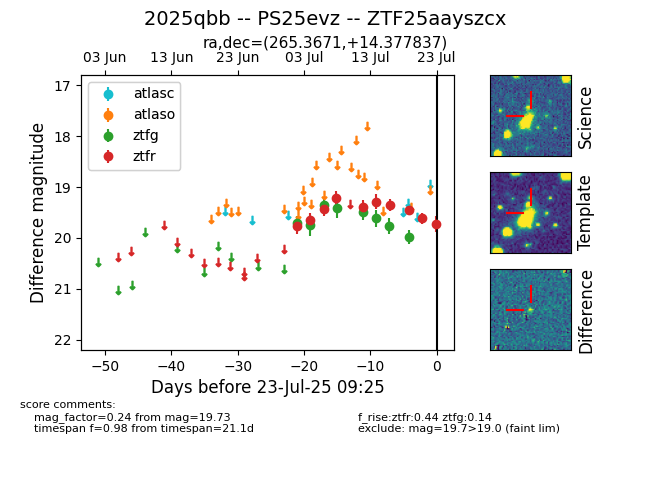

Target ZTF25aayszcx at 2025-07-23 12:37, see:
FINK: fink-portal.org/ZTF25aayszcx
Lasair: lasair-ztf.lsst.ac.uk/objects/ZTF25aayszcx
ALeRCE: alerce.online/object/ZTF25aayszcx
TNS: wis-tns.org/object/2025qbb
YSE: ziggy.ucolick.org/yse/transient_detail/2025qbb
alt names
ZTF25aayszcx (ztf,fink)
2025qbb (tns,yse)
PS25evz (panstarrs)
coordinates:
equatorial (ra, dec) = (265.3671,+14.37784)
galactic (l, b) = (38.3871,+21.86129)
photometry
last ztfg=19.98, ztfr=19.73
8 ztfg, 10 ztfr detections
